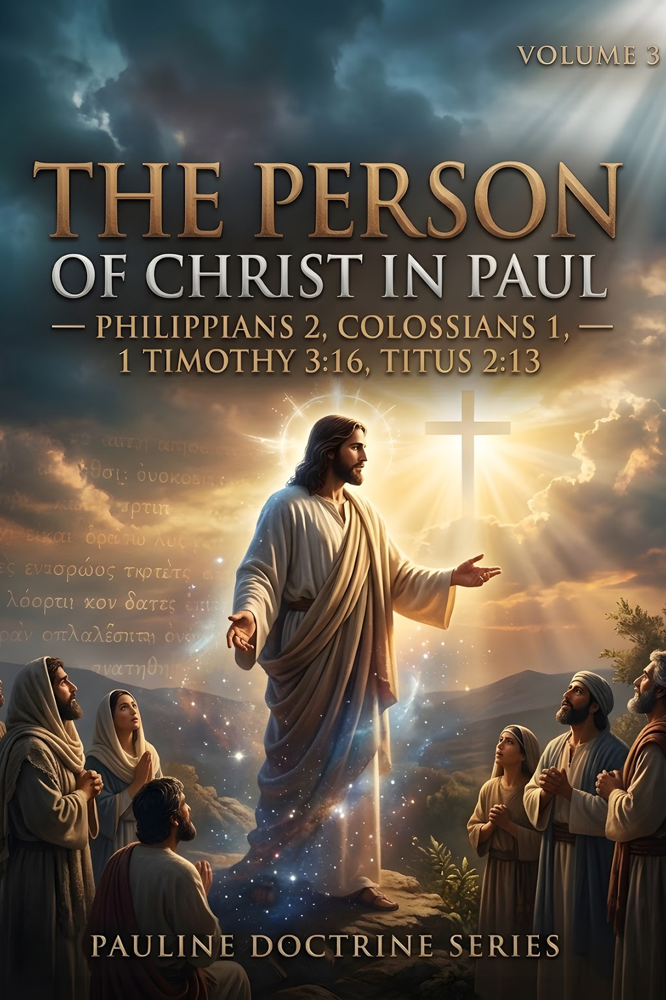
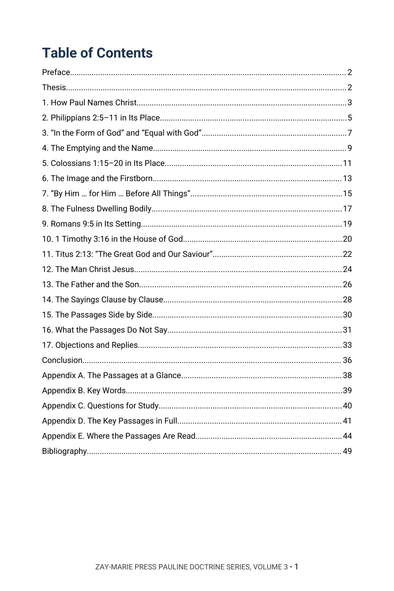
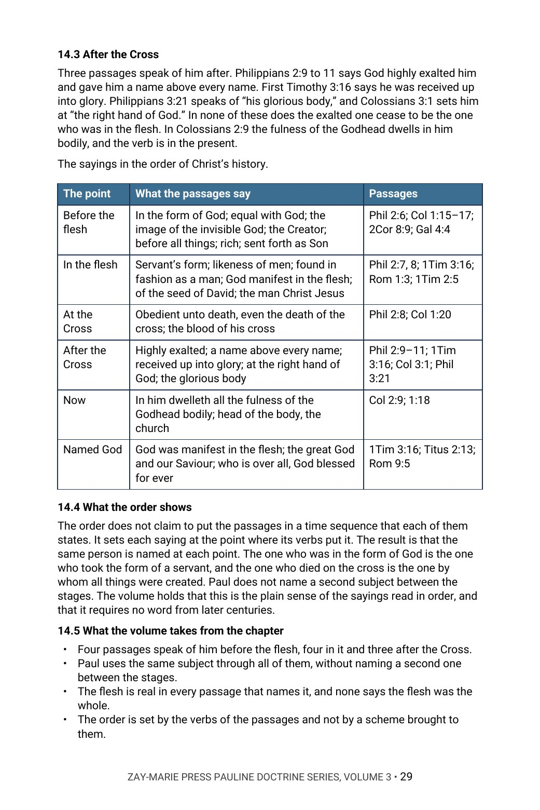
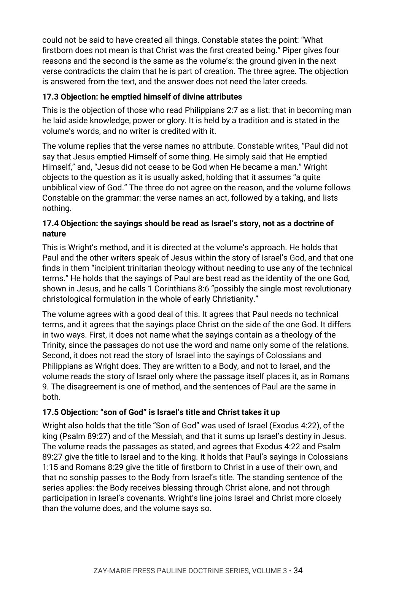

The Person of Christ in Paul
Who He Is, Before and Apart from What He Did
Paul calls Christ the image of the invisible God, and he calls him the man Christ Jesus. What do his own passages say about who he is?
In Philippians 2 one who was in the form of God takes the form of a servant. In Colossians 1 and 2 he is the image of the invisible God, the one by whom all things were created, in whom all the fulness of the Godhead dwells bodily. In 1 Timothy 3 God is manifest in the flesh, in Titus 2 he is the great God and our Saviour, and in Romans 9 he is over all. This commentary reads each passage in its own place, in the King James text, one clause at a time.
It argues that these are not one creed said five times and that none of them uses the words of the later creeds: read together, they present one person who is God and who became man, and each leaves unsaid how the two are one. In Chapter 17 it sets its reading beside modern writers who see it differently.
New to the framework? The Digital Studies teach the distinctions this volume relies on. Start with the Digital Studies →
A Commentary That Argues a Position
This volume does not survey the ways the person of Christ has been explained and leave the choice to the reader. It says what the author believes Paul teaches when he writes about who Christ is, gives the evidence from Paul’s own sentences, and answers the strongest objections in the objectors’ own words.
It is the third volume of the Pauline Doctrine Series, each volume of which is built around one narrower question on a large subject in Paul’s letters. It is a different kind of book from the Digital Studies, which report what a passage says. Scripture is quoted from the King James Version throughout, checked word for word, and the writers named in Chapter 17 are quoted only from words the author has read in full. Its own question is narrow: what does each of Paul’s sayings say Christ is, in its own place, and what does it leave unsaid?
Related Reading
Digital Studies
Study 52 — Sonship and Adoption Reads sonship and the firstborn as Israel’s; this volume reads the firstborn of Colossians 1:15 and 1:18 as Christ’s own title and keeps the two uses apart.
Study 55 — Reconciled to God Traces reconciliation through Colossians 1:19–23; this volume reads the same verses for who it is in whom the fulness dwells.
Study 57 — The Eternal Purpose of God Reads God’s purpose in Colossians and Ephesians; this volume reads Colossians 1:15–20 for what it says of Christ himself.
Commentary Series
Pauline Doctrine Series, Volume 2 — The Cross in Paul’s Letters Reads what Paul’s passages say the Cross did; this volume reads who it is that Paul says did it.
Prophecy & Mystery Commentary Series, Volume 3 — The Kingdom Program Rules on Colossians 1:13 and the Son’s kingdom; this volume does not argue it and reads the verses that follow it.
Covenantal Commentary Series, Volume 4 — The Eternal Purpose of God Reads Colossians 1:15–20 within God’s purpose in heaven and earth; this volume asks who the passage says Christ is.
Doctrinal Packets
Doctrinal Packet — Philippians Interprets the book of Philippians through its key passages in five pages.
Doctrinal Packet — Colossians Interprets the book of Colossians through its key passages in five pages.
Doctrinal Packet — Titus Interprets the book of Titus through its key passages in five pages.
From the Names to the Objections
The Names
See how Paul names Christ in different letters, and what a title alone does and does not settle.
The Hymn at Philippi
Read Philippians 2:5–11 in the setting of the quarrel it answers, and note what “form,” “equal” and “no reputation” say and leave unsaid.
Image, Firstborn, Creator
Follow Colossians 1:15–17 in the order Paul gives it and test the title “firstborn” against the verse that explains it.
The Fulness
Read Colossians 1:19 and 2:9 together and mark what “all” and “bodily” add.
Three Short Sayings
Read Romans 9:5, 1 Timothy 3:16 and Titus 2:13 in their own settings, with the questions of punctuation and wording stated fairly.
The Objections
Hear named modern writers who read the passages differently, then weigh each reply against the text.
Read the Word in Its Context
Philippians 2:6
“Who, being in the form of God, thought it not robbery to be equal with God:”
Colossians 1:15
“Who is the image of the invisible God, the firstborn of every creature:”
Colossians 1:16
“For by him were all things created, that are in heaven, and that are in earth, visible and invisible, whether they be thrones, or dominions, or principalities, or powers: all things were created by him, and for him:”
Colossians 2:9
“For in him dwelleth all the fulness of the Godhead bodily.”
1 Timothy 3:16
“And without controversy great is the mystery of godliness: God was manifest in the flesh, justified in the Spirit, seen of angels, preached unto the Gentiles, believed on in the world, received up into glory.”
Titus 2:13
“Looking for that blessed hope, and the glorious appearing of the great God and our Saviour Jesus Christ;”
Romans 9:5
“Whose are the fathers, and of whom as concerning the flesh Christ came, who is over all, God blessed for ever. Amen.”
1 Timothy 2:5
“For there is one God, and one mediator between God and men, the man Christ Jesus;”
What This Book Sets Out to Do
Take any one of the passages and ask whether it stands without the others.
If it does, the thesis is only partly needed. If each passage is made clearer by the rest, and none by a later creed, the thesis stands.
Preview the Volume Before You Purchase
Click any page to enlarge it for reading.


Table of Contents
See the full order of the argument, from the Preface to the Bibliography.



The Argument at Work
See the method: the sayings set in the order of Christ’s history, with the passages beside each.


Objections and Replies
See the modern voices named, each objection in their words, and the answer to it.
A Full Commentary on the Person of Christ in Paul
50-Page Digital PDF
Cover and a fully numbered interior.
Seventeen Chapters
From the names of Christ to the objections and replies.
Objections and Replies
Modern voices named, with each objection answered from the text.
Clause by Clause
Philippians 2, Colossians 1 and 2, Romans 9, 1 Timothy 3 and Titus 2 read one clause at a time, with what each leaves unsaid.
Comparison Tables
The passages set side by side by their problems.
Conclusion
The position restated in full, with a closing table.
Five Appendices
The passages at a glance, the key words in Roman letters, study questions, the key passages in full and a verse-by-verse index of where the passages are read.
Bibliography
Every work cited, listed by author and title.
The Person of Christ in Paul
50-page digital PDF · For personal use